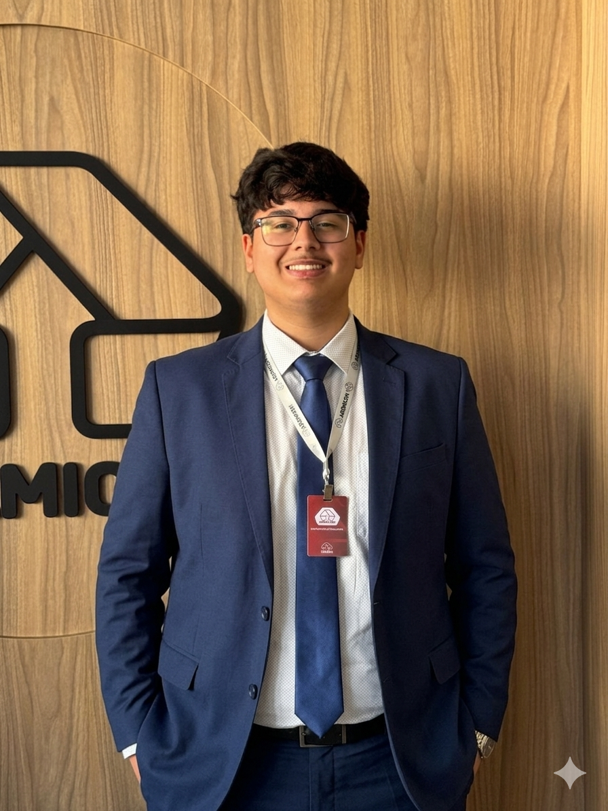

Consórcio para imóvel
Para quem quer sair do aluguel, comprar, trocar ou planejar a aquisição de um imóvel com mais organização.
Sou Felipe Alves, consultor Ademicon com base em Marília. Meu trabalho é entender seu objetivo, organizar as possibilidades e apresentar um plano mais coerente com seu orçamento, prazo e momento de vida.

Cada atendimento parte do seu momento atual. A recomendação mais adequada depende do seu objetivo, prazo, orçamento e estratégia patrimonial.
Para quem quer sair do aluguel, comprar, trocar ou planejar a aquisição de um imóvel com mais organização.
Ideal para quem deseja comprar ou trocar de carro, moto ou utilitário com planejamento e previsibilidade.
Atendimento para quem quer construir patrimônio no Brasil com visão de médio e longo prazo, inclusive morando no exterior.
Meu objetivo é tornar sua decisão mais segura, com explicação clara do processo, entendimento do seu perfil e acompanhamento próximo.
A página deixa claro quem eu atendo, quais objetivos trabalho e como você pode iniciar o atendimento.
Você entende as etapas do processo e conversa com alguém que organiza as informações de forma simples e objetiva.
O contato é direto, sem enrolação e com foco no que faz sentido para seu momento financeiro e seus planos.
WhatsApp, Instagram, base em Marília e atendimento online reforçam proximidade e profissionalismo em um só lugar.
Se você se identifica com um desses objetivos, a conversa inicial já ajuda a entender qual direção faz mais sentido.
Busca uma estratégia mais organizada para planejar a compra do imóvel.
Quer previsibilidade financeira e um plano alinhado ao orçamento.
Deseja construir algo de forma planejada, sem agir por impulso.
Precisam de orientação clara para organizar decisões patrimoniais no Brasil.
Um caminho simples para você entender o próximo passo com mais tranquilidade.
Você me conta sua meta, prazo, orçamento e contexto atual.
Organizo as informações para identificar a direção mais coerente para seu perfil.
Você recebe uma orientação clara para decidir com mais segurança.
O atendimento segue de forma próxima, com suporte durante o processo.
Respostas rápidas para as dúvidas mais comuns antes do primeiro contato.
Não. Minha base é em Marília, mas o atendimento é online para todo o Brasil e também para brasileiros no exterior.
Sim. O WhatsApp é o canal mais rápido para iniciar a conversa, tirar dúvidas e entender seu objetivo.
Sim. Atendo objetivos ligados a imóvel, veículo e também planejamento patrimonial, sempre considerando o seu perfil.
Sim. Muitos clientes valorizam justamente a possibilidade de receber atendimento online e organizar decisões patrimoniais no Brasil mesmo morando no exterior.
Não. Primeiro eu entendo seu objetivo e seu momento. A orientação precisa ser coerente com seu orçamento, prazo e estratégia.
Fale comigo no WhatsApp para explicar seu objetivo. A partir disso, eu te ajudo a organizar os próximos passos com mais clareza.